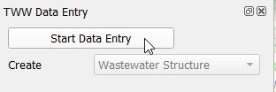
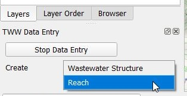
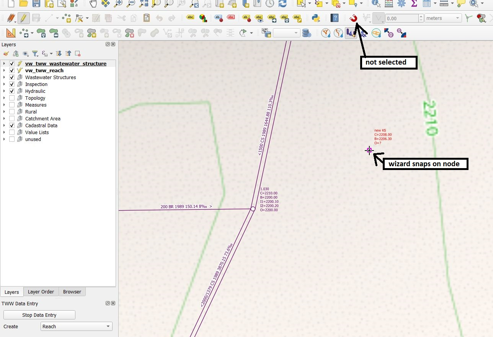
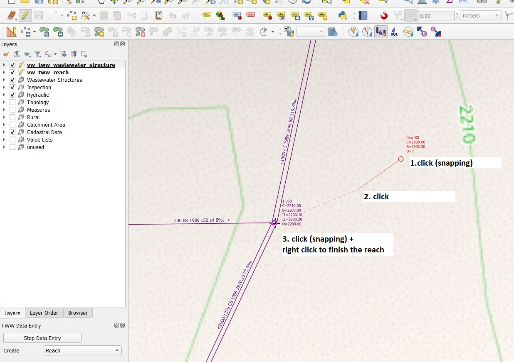
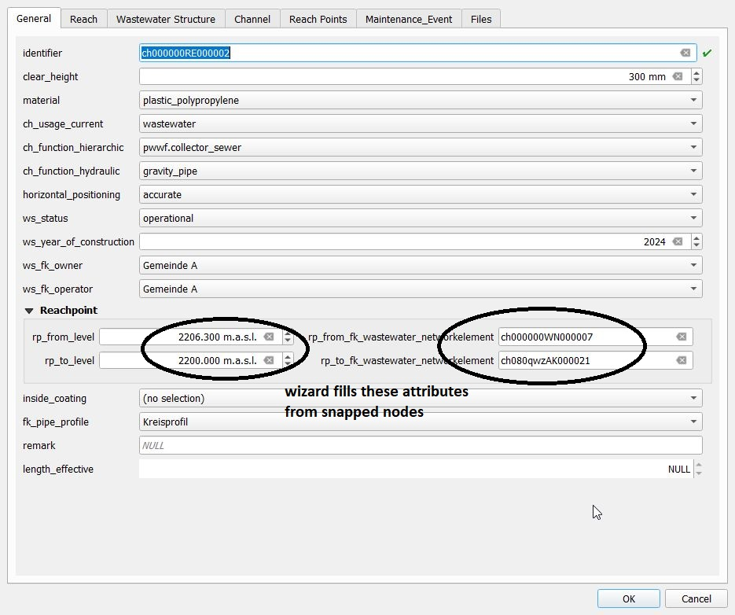
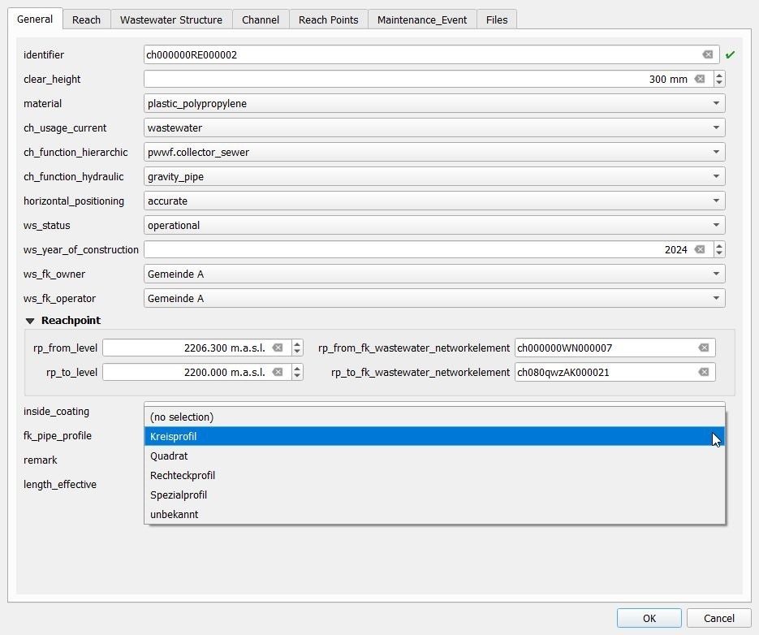
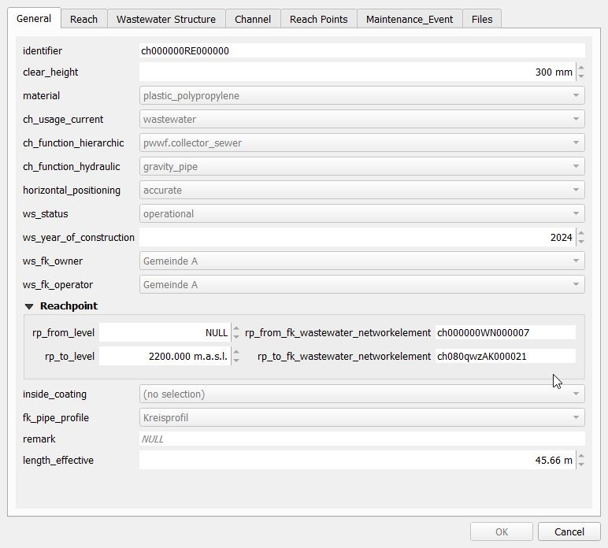

Numérisation de canalisations
Généralités
TWW has a wizard to correctly build channels and connect them to wastewater structures respectively to wastewater nodes or other reaches (building up the topology for waste water nodes and reaches). See the L’assistant TWW chapter.
Sélectionnez le bouton Wizard, puis cliquez sur Start Data Entry et choisissez Reach dans le menu déroulant.


Attention
Commencer la digitalisation dans le sens de l’écoulement en commençant avec le from manhole node et en finissant par le to manhole node.
Numérisation
En mode numérisation, le curseur s’accroche automatiquement au nœud de wastewater ou au tronçon le plus proche. Un clic gauche permet de commencer à dessiner la ligne.

Utilisez le bouton gauche de la souris pour définir les points intermédiaires de la conduite. Vous pouvez aussi directement sélectionner une autre chambre pour dessiner une conduite droite.
Il est possible d’utiliser les outils de Numérisation avancée avec l’assistant de saisie.

Vous terminez la numérisation de la ligne par un clic droit. La fenêtre des attributs de l’entité vw_tww_reach s’affiche alors, et vous pouvez commencer à renseigner les données dans l’onglet General :

Note
Gardez en tête que le point final de la conduite est le dernier point où vous avez effectué un clic gauche avec la souris, le clic droit servant uniquement à terminer l’édition et faire apparaître le formulaire. Ainsi, pour numériser une conduite simple comportant 2 points, il faudra deux clics gauche et un clic droit pour finaliser la numérisation de cette ligne.
Contrôlez l’accrochage aux noeuds ou autres tronçons du réseau assainissement dans les champs rp_de/vers_fk_assainissement_element_reseau
Note
Si vous ne saisissez pas d’identifier (identifiant du tronçon) dans l’onglet General, TWW utilisera automatiquement l’obj_id comme identifiant (ce paramètre peut être modifié ultérieurement). Par défaut, l’identifier du tronçon est également utilisé comme ws_identifier du canal. Par défaut également, l’identifiant du point de tronçon « reachpoint » est défini sur le obj_id du point de tronçon.
Note
Voir Synchronisation de la géométrie pour la définition automatique des niveaux de point d’aboutissement lors de l’aimantation aux nœuds d’eaux usées disposant d’un niveau.
Pour le type de profil, vous obtenez une liste des profils définis. Vous pouvez modifier les profils de conduites dans la table pipe_profile (groupe de couches Wastewater Structures).

Une fois que vous avez terminé, cliquez sur le bouton OK.
Sauvez les informations de la couche en stoppant l’assistant de saisie.

Note
Les champs standard de l’onglet General (et uniquement ces champs) réutilisent la dernière valeur d’attribut saisie lorsque vous ajoutez de nouveaux tronçons à l’aide de l’assistant. L’option QGIS Réutiliser les dernières valeurs d’attribut saisies ainsi que les valeurs par défaut n’ont aucune influence sur ces champs.
Vous pouvez éditer à nouveau un objet en sélectionnant les boutons Basculer en mode édition et Identifier les entités avant de sélectionner l’objet désiré avec le curseur.
Si vous ne sélectionnez pas le mode édition, vous pouvez uniquement consulter les données existantes.

Pour plus d’informations au sujet de l’édition de données, voir le chapitre Modification de données existantes.
Autres classes et attributs
Lorsqu’un objet linéaire est numérisé, une série d’étapes se déroulent en arrière‑plan dans la base de données TWW :
Un nouvel objet est ajouté dans la classe wastewater structure (wastewater_structure).
a new object is added and linked in the channel subclass (
channel)a new reach object is generated in the wastewater network elements class (
wastewater_networkelement) and its subclass reach (reach)Deux objets de type reach point sont ajoutés et liés à la conduite (
rp_from_node,rp_to_node)
Synchronisation de la géométrie
Lors de l’insertion d’un nouveau tronçon à l’aide de l’assistant, les points de début et de fin de la géométrie linéaire déterminent le niveau des points de tronçon correspondants (comme illustré dans les images ci‑dessus). Ces valeurs peuvent être modifiées avant l’enregistrement. Lors de l’enregistrement, les valeurs de niveau rp_from_level et rp_to_level sont utilisées pour définir la valeur Z du premier et du dernier sommet du tronçon.
Lors de la mise à jour d’un tronçon, plusieurs cas peuvent se présenter :
Le premier/dernier sommet de la géométrie du tronçon n’a pas été modifié, mais la valeur rp_from_level/rp_to_level l’a été. Dans ce cas, la valeur de niveau rp_from_level/rp_to_level est utilisée pour définir la valeur Z du premier/dernier sommet du tronçon.
Le premier/dernier sommet de la géométrie du tronçon a été modifié, mais la valeur rp_from_level/rp_to_level` ne l’a pas été. Dans ce cas, la variable QGIS @tww_update_lvl_by_geom détermine si la valeur rp_from_level/rp_to_level est écrasée par la valeur Z du premier/dernier sommet du tronçon.
Le premier/dernier sommet de la géométrie du tronçon ainsi que la valeur rp_from_level/rp_to_level ont tous deux été modifiés. Les valeurs rp_from_level/rp_to_level ont la priorité.
Ni le premier/dernier sommet de la géométrie du tronçon, ni la valeur rp_from_level/`rp_to_level n’ont été modifiés. Aucun changement n’est appliqué.
La synchronisation des niveaux fonctionne également pour les points intermédiaires (points situés entre les points de tronçon), si vous vous aimantez, lors de la numérisation, à des points 3D d’une autre couche (par exemple un fichier texte issu de mesures GPS avec des coordonnées x, y, z ajoutées au projet QGIS). Attention toutefois : vous obtenez alors un tronçon entièrement en 3D, mais lors de l’export vers INTERLIS, ces niveaux intermédiaires seront perdus, car la version 2020 de VSA‑DSS ne prend pas en charge la géométrie 3D des tronçons.
Numérisation d’une buse de chasse
Ajouté dans la version 2025.0.
TWW est configuré pour numériser les buses de rinçage en tant qu’élément de structure du canal.
Vous pouvez numériser une buse de rinçage.
en commençant depuis la fenêtre des attributs de l’entité vw_tww_reach, onglet Structure Parts. Ajoutez une entité fille de type point et numérisez le point sur la carte. Ou
créez un nouveau point dans vw_flushing_nozzle et sélectionnez le canal connecté pour le champ fk_wastewater_structure directement sur la carte.
Note
Une buse de rinçage est reliée à wastewater_structure, mais sa géométrie est totalement indépendante de la géométrie de cette structure. Si vous déplacez le canal, vous devez déplacer la buse de rinçage manuellement.